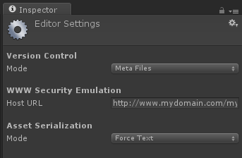

I thought all was well when I pushed GiantBomb: P3DV to GitHub, but that wasn't the case; Unity wasn't setup correctly and neither was Git. At least from memory, there wasn't any source that mentioned specifically how to make Unity talk only a bit to Git rather than Unity handing over binary files.
Some of this was covered in the Unity Manual's Using External Version Control Systems page; however, it is not aimed directly at setting up Git.
In Unity, click Edit->Project Settings->Editor.
Set the Version Control Mode to Meta Files.
Set the Asset Serialization Mode to Force Text.
Quit Unity.

Delete the Library folder from your current project's folder.
Load Unity back up.
Add the following to your
gitignorefile:Create your initial commit.
-
Make sure all changes have been committed before running the next command. Open up Terminal or Comamnd Prompt and enter the following command:
git rm -r --cached . Commit the newly deleted files.
The meta information for any asset is defaultly stored in a binary form. This includes things such as a texture's size, compression type, and filter mode.
You may notice Unity has generated .meta files for every asset. This is a good sign. It means that your project is now source-control-friendly - using text based metafiles instead of the binaries in the Library folder.
Library
Temp
*.csproj
*.pidb
*.sln
*.userprefs
build
Assembly*
Now you are free to enjoy the wonderous power of Git!